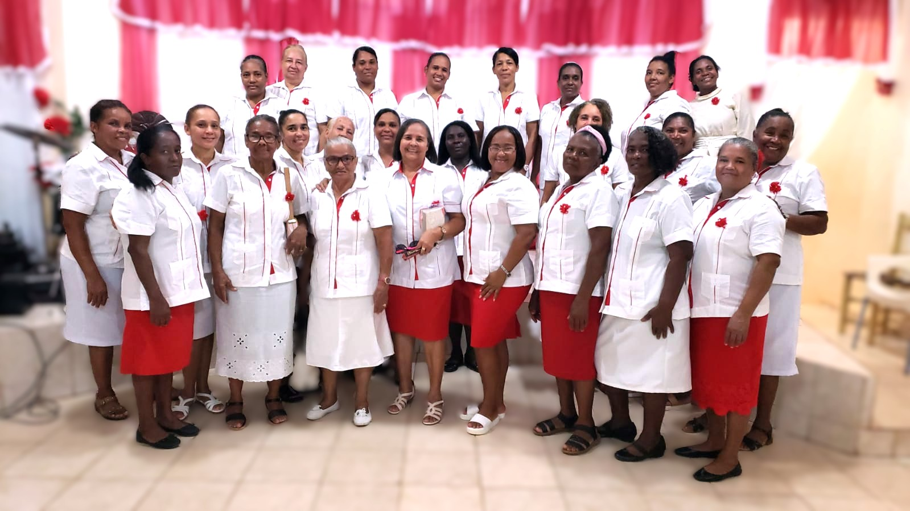

Mujeres de Fe, Propósito y Transformación
El Ministerio Femenil de las Asambleas de Dios, es un espacio vibrante y acogedor diseñado para empoderar a
las mujeres de todas las edades. Buscamos fortalecer su fe, fomentar el compañerismo, promover el
crecimiento personal y espiritual, y equiparlas para que sean agentes de cambio en sus hogares, iglesias y
comunidades. Creemos en el potencial ilimitado de cada mujer cuando está conectada con Dios y con otras
mujeres.

Nuestro Propósito
Nuestra misión es edificar a cada mujer para que descubra y viva su propósito divino, desarrolle sus dones y
talentos, y experimente el amor incondicional de Dios. A través de la enseñanza de la Palabra, la oración y
el servicio, buscamos que cada mujer alcance su máximo potencial en Cristo.
- Edificación Espiritual: Estudios bíblicos, conferencias y talleres enfocados en temas
relevantes para la mujer de hoy.
- Compañerismo y Apoyo: Espacios para compartir, orar juntas y construir relaciones
sólidas de apoyo mutuo.
- Servicio y Alcance: Iniciativas de evangelismo y programas sociales que permiten a las
mujeres impactar su entorno.
- Desarrollo de Liderazgo: Capacitación para que las mujeres asuman roles de liderazgo en
la iglesia y la sociedad.
Actividades Regulares
Organizamos una variedad de actividades a lo largo del año, que incluyen:
- Reuniones mensuales de estudio bíblico y oración.
- Desayunos y almuerzos de compañerismo.
- Conferencias y retiros anuales para mujeres.
- Proyectos de servicio comunitario y evangelismo.
- Grupos pequeños de apoyo y mentoría.
Nuestro Liderazgo Femenil
Conozca a nuestro equipo de liderazgo, dedicado a guiar a nuestro ministerio femenil con sabiduría,
visión y conforme a los principios bíblicos. Cada uno de ellos sirve con un corazón apasionado por Dios y
por el crecimiento de su pueblo.

Ana Sosa Martinez
Presidenta
Cristian
Vice - Presidenta
Raquel Abreu Guerrero
Secretaria
Para más información sobre nuestra estructura de liderazgo y los pastores que nos sirven, por favor
contacte nuestra oficina central o revise nuestros estatutos disponibles en la sección de Recursos.
Galería de Fotos y Videos
Reviva los momentos más memorables de nuestros eventos, conferencias y actividades a través de nuestra
galería visual. Próximamente encontrará fotos y videos inspiradores que capturan la esencia de nuestro
ministerio femenil.